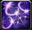
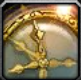
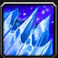
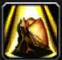
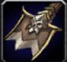

M+ Talents
|
|
 Frostfire
Frostfire
 Spellslinger
Spellslinger
In the current state of Season 2 Frostfire is a lot stronger than Spellslinger.
There are still 2 different talent builds for both hero talents. One with and one without  Death's Chill.
Death's Chill.
Utility Abilities
Interrupts and AoE Stops:
-
Counterspell is your "kick" and is
the most important piece of utility in your entire kit. It is used to stop all casts that are interruptable and it is
very important to utilize your kick no matter the class you are playing.
Supernova and
Dragon's Breath
are the most important AoE stops in your kit as they are the most consistent.
Supernova knocks the target and all
enemies within 8 yds up, while
Dragon's Breath
disorients targets in a short-range cone. The other AoE stop available to you is
Blast Wave,
which is a knockback. Since knockbacks are less reliable, they can fail to interrupt the current target.
Dragon's Breath and
Supernova have a decently long cooldown,
but the cooldown gets reduced by
 Ice Lance
due to
Time Manipulation.
Ice Lance
due to
Time Manipulation.
Different utility:
- Decurse: Remove Curse, allows us to remove curses on an 8 second cooldown.
- Invisibility:
 Greater Invisibility.
is a multi use spell that can not only make you invisible to drop aggro, skip packs and for the 60% damage reduction,
but can even stop some mechanics that are targeting you. In some situations it could change target, but in others it could
completely stop the mechanic from occuring.
Greater Invisibility.
is a multi use spell that can not only make you invisible to drop aggro, skip packs and for the 60% damage reduction,
but can even stop some mechanics that are targeting you. In some situations it could change target, but in others it could
completely stop the mechanic from occuring. - Spellsteal: Spellsteal Many mobs cast powerful Magic effects that you can steal to gain benefits. Most of the abusable ones have either been removed or are not in the dungeon pool.
Cinderbrew Meadery
Boss Mechanics
- Combining Shimmer and Alter time makes it easy to pick up Cinderbrew and you can easily do 2 of them if you play correctly.
- You can slow the Brew Drops
from I'pa using
 Frozen Orb and
Frozen Orb and  Blizzard.
Blizzard. - Use Alter time when Goldie Baronbottom uses Let it Hail!
Important Trash Mechanics
As there are a lot of DoTs from most of the mobs that deal damage, Alter time is very strong.
The Rookery
Boss Mechanics
Important Trash Mechanics
- The Coalescing Void diffuser is very dangerous so use a defensive every time it casts Attracting shadows if it overlaps with another mechanic.
Darkflame Cleft
Boss Mechanics
- Use Shimmer to light up 3 Candles on Blazikon.
- Combine Shimmer and Alter time to pick up a candle during Eternal Darkness.
Important Trash Mechanics
- Use Frost Nova,
 Ice Nova or whatever spell you have which freezes the mobs when they get knocked back by
Wild Wallop from the
Overseer.
Ice Nova or whatever spell you have which freezes the mobs when they get knocked back by
Wild Wallop from the
Overseer. - Mage is one of the few classes that can dodge One-Hand Headlock from Torchsnarl by using Shimmer
Motherlode
Boss Mechanics
- Use Alter time on Static Pulse from Coin-Operated Crowd Pummeler.
- Try not to use
 Glacial Spike
while the footballs are out as you are capable of freezing them which could fail you the mechanic.
Glacial Spike
while the footballs are out as you are capable of freezing them which could fail you the mechanic. - You can use Greater Invisibility
to drop aggro from the Earthrager on
Azerokk as long as there is another ranged dps in your group.
Important Trash Mechanics
- Alter time after getting knocked up by Addled Thug.
- Alter time if targeted by Mind Lash by Venture Co. Mastermind.
Operation: Floodgate
Boss Mechanics
- You can Shimmer through Sonic Boom if Big M.O.M.M.A targets you with it.
- Avoid using Shimmer when fighting Swampface due to being linked with a teammate.
- You can use Alter time for either Gigazap or Turbo Charge.
Important Trash Mechanics
- Use Alter time when the Darkfuse Bloodwarper uses Warp Blood. Use another defensive if it goes through again.
Priory of the Sacred Flame
Boss Mechanics
- Alter time when Emberlanz uses Holy Radiance
- Slow the Arathi Neophytes
that spawn when Prioress Murrpray reaches 50% health using
Frozen Orb or
Blizzard
Important Trash Mechanics
Due to there being a lot of targeted DoTs or other targeted channels in this dungeon, just try to use Alter time if you are getting targeted by one of them.
Theater of Pain
Boss Mechanics
- When Fighting Gorechop, you can Shimmer through the Meat Hooks and make the mechanic trivial.
- This dungeon has a lot of mechanics requiring movement therefore Shimmer is extremely valuable for optimal uptime in every boss encounter
Important Trash Mechanics
- You can Spellsteal the Bone Shield from Bone Magus.
Operation: Mechagon Workshop
Boss Mechanics
- Use Alter time if you get targeted by Foe Flipper from Gnomercy 4.U. If you do not have it you can Shimmer to get down to the ground faster or to avoid hitting any potential mines when landing.
- If targeted by Mega-Zap from King Mechagon use Alter time.
Important Trash Mechanics
There is a lot of progressive damage and not a lot of one shots in this dungeon so try and use Alter time for those that you can.
Full Mythic+ Guide
You can find a full guide which gives a lot of information here. That guide is about how Mythic+ works as a whole. This is a cheat sheet which helps greatly to improve at Mythic+. There are also links to a full guide for each dungeon in the cheat sheet.